圆锥曲线⚓︎
这是我高中时名为"圆曲妙妙屋"的专栏，谨以此记录我的青春。
Fri, 17th Nov 2023, 杭州二中小 Z
高考卷好题记录⚓︎
| 完成情况 | 题源 | 命题背景 | 简洁解法 | 收录 |
|---|---|---|---|---|
| ✓ | 2024·上海春考 | / | easy | |
| ✓ | 2023·全国甲卷 | / | easy | |
| ✓ | 2023·全国乙卷 | 极点极线, 调和点列, 调和线束 | 齐次化 | ✓ |
| ✓ | 2023·新高考 I 卷 | [N/A] | ||
| ✓ | 2023·新高考 II 卷 | 自极三角形 | 齐次化, 第三定义 | ✓ |
| ✓ | 2023·北京卷 | 帕斯卡定理 (退化), 仿射变换, 四点共圆 | 同一法 | ✓ |
| ✓ | 2023·上海卷 | / | easy | |
| ✓ | 2023·天津卷 | / | easy | |
| ✓ | 2022·全国甲卷 | (抛物线) 蝴蝶定理 | easy | |
| ✓ | 2022·全国乙卷 | 极点极线, 调和点列, 调和线束 | 齐次化, 同一法 | |
| ✓ | 2022·新高考 I 卷 | 圆锥曲线上的四点共圆 (退化), 拉格朗日中值的几何意义 | 齐次化 | |
| ✓ | 2022·新高考 II 卷 | 渐近线引理, 相似 | 曲线系, 同一法 | ✓ |
| ✓ | 2022·浙江卷 | 对合变换 | 齐次化, 参数方程 | ✓ |
| ✓ | 2022·天津卷 | / | 参数方程 | |
| ✓ | 2021·全国甲卷 | 彭赛列闭合定理 | 设点法 | |
| ✓ | 2021·全国乙卷 | / | easy | |
| ✓ | 2021·新高考 I 卷 | 圆锥曲线上的四点共圆 | 曲线系, 参数方程 | ✓ |
| ✓ | 2021·新高考 II 卷 | / | easy | |
| ✓ | 2021·浙江卷 | / | 设线硬算 (待优化) | ✓ |
| ✓ | 2021·北京卷 | / | easy | |
| ✓ | 2020·全国 I 卷 | 自极三角形 | 齐次化 | |
| ✓ | 2020·全国 III 卷 | / | easy | |
| ✓ | 2020·新高考 I 卷 | 对合变换 | 齐次化 | |
| ✓ | 2020·浙江卷 | / | 设点法, 中点弦 | ✓ |
| ✓ | 2020·北京卷 | 极点极线, 调和点列, 调和线束 | 齐次化 | |
| ✓ | 2020·天津卷 | / | easy |
2023·全国乙卷，20（命题背景：极点极线, 调和点列, 调和线束）
已知椭圆 \(\mathrm{C}:\ \frac{y^2}{9}+\frac{x^2}{4}=1\)，点 \(\mathrm{A}\ (-2,0)\)。
（2）过点 \(\mathrm{T}\ (-2,3)\) 的直线交 \(\mathrm{C}\) 于 \(\mathrm{P,Q}\) 两点，直线 \(\mathrm{AP,AQ}\) 与 \(y\) 轴的交点分别为 \(\mathrm{M,N}\)，证明：线段 \(\mathrm{MN}\) 的中点为定点。
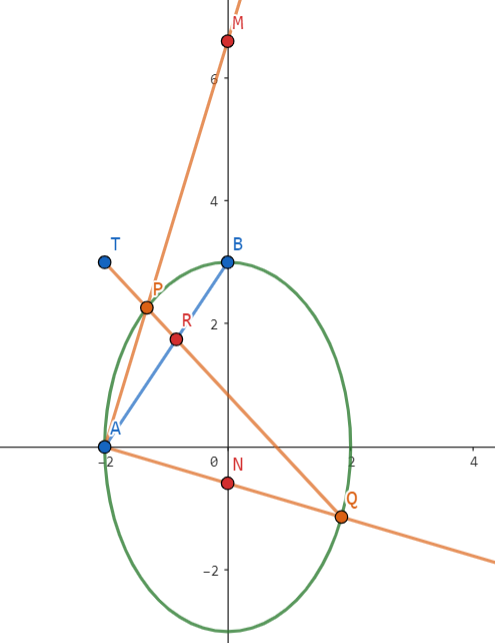
极点极线 + 调和点列 + 调和线束
注意到 \(\mathrm{AB}\) 为 \(\mathrm{T}\) 的极线，故 \(\mathrm{T,P,R,Q}\) 为调和点列。
调和线束 \(\mathrm{AT,AP,AR,AQ}\) 与 \(y\) 轴分别交于 \(\mathrm{D,M,B,N}\)，故 \(\mathrm{D,M,B,N}\) 为调和点列，其中 \(\mathrm{D}\) 为无穷远点。
由 \(\mathrm{\frac{|NB|}{|BM|}=\frac{|ND|}{|DM|}=1}\) 知 \(\mathrm{B}\) 为 \(\mathrm{MN}\) 中点，故定点为 \((0,3)\)。
齐次化
设点 \(\mathrm{P}\ (x_1,y_1),\ \mathrm{Q}\ (x_2,y_2)\)，则 \(\mathrm{AP}:\ y=\frac{y_1}{x_1+2}(x+2)\)，故 \(\mathrm{M}\ (0,\frac{2y_1}{x_1+2})\)。同理 \(\mathrm{N}\ (0,\frac{2y_2}{x_2+2})\)。
设点 \(\mathrm{M,N}\) 的中点为 \(\mathrm{R}\ (0,\frac{y_1}{x_1+2}+\frac{y_2}{x_2+2})\)，这启发我们用齐次化处理。
设 \(\mathrm{PQ}: m(x+2)+ny=1\)，由 \(\mathrm{PQ}\) 过 \((-2,3)\) 知 \(n=\frac{1}{3}\)。
联立得 \(\frac{1}{9}\left(\frac{y}{x+2}\right)^2-\frac{1}{3}\left(\frac{y}{x+2}\right)+\frac{1}{4}-m=0\)，因此 \(y_R=3\)，即定点 \((0,3)\)。
2023·新高考 II 卷，21（命题背景：自极三角形）
已知双曲线 \(\mathrm{C}:\ \frac{x^2}{4}-\frac{y^2}{16}=1\)，左右顶点分别为 \(\mathrm{A_1,A_2}\)。
（2）过点 \(\mathrm{T}\ (-4,0)\) 的直线交 \(\mathrm{C}\) 的左支于 \(\mathrm{M,N}\) 两点，\(\mathrm{M}\) 在第二象限，直线 \(\mathrm{MA_1}\) 与直线 \(\mathrm{NA_2}\) 交于点 \(\mathrm{P}\)。证明：点 \(\mathrm{P}\) 在定直线上。
自极三角形
对于双曲线上的四边形 \(\mathrm{M,N,A_1,A_2}\)，对边交点为 \(\mathrm{T}\)，对角线交点为 \(\mathrm{P}\)，由自极三角形知 \(\mathrm{P}\) 在 \(\mathrm{T}\) 的极线 \(x=-1\) 上。
齐次化 + 第三定义
注意到直线 \(\mathrm{MN}\) 过定点，由对合变换知直线 \(\mathrm{MA_2,NA_2}\) 斜率积为定值。证明采用齐次化：
设 \(\mathrm{MN}:\ m(x-2)+ny=1\)，代入 \((-4,0)\) 得 \(m=-\frac{1}{6}\)，联立得 \(-\frac{1}{16}\left(\frac{y}{x-2}\right)^2+n\left(\frac{y}{x-2}\right)+\frac{1}{12}=0\)。
因此 \(k_{MA_2}\cdot k_{NA_2}=-\frac{4}{3}\)，由双曲线的第三定义知 \(k_{MA_2}\cdot k_{MA_1}=4\)，故 \(\frac{k_{A_1P}}{k_{A_2P}}=-3\Rightarrow x_P=-1\)。
2023·北京，19（命题背景：帕斯卡定理 (退化) / 仿射变换, 四点共圆）
已知椭圆 \(\mathrm{E}:\ \frac{x^2}{9}+\frac{y^2}{4}=1\)，\(\mathrm{A,C}\) 分别是 \(\mathrm{E}\) 的上下顶点，\(\mathrm{B,D}\) 分别是 \(\mathrm{E}\) 的左右顶点。
（2）设 \(\mathrm{P}\) 为第一象限内 \(\mathrm{E}\) 上的动点，直线 \(\mathrm{PD}\) 与直线 \(\mathrm{BC}\) 交于点 \(\mathrm{M}\)，直线 \(\mathrm{PA}\) 与直线 \(y=-2\) 交于点 \(\mathrm{N}\)，求证：\(\mathrm{MN}\parallel \mathrm{CD}\)。
帕斯卡定理（退化）
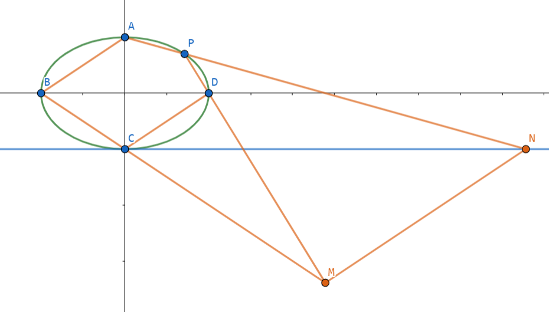
对于 (退化) 六边形 \(\mathrm{CCDPAB}\) 使用帕斯卡定理，\(\mathrm{CC}\cap \mathrm{PA}=\mathrm{N},\mathrm{CD}\cap \mathrm{AB}=\mathrm{Q},\mathrm{DP}\cap \mathrm{BC}=\mathrm{M}\)，则 \(\mathrm{N,Q,M}\) 三点共线。又 \(\mathrm{Q}\) 是无穷远点，因此 \(\mathrm{MN}\parallel \mathrm{AB}\parallel \mathrm{CD}\)。
仿射变换 + 四点共圆
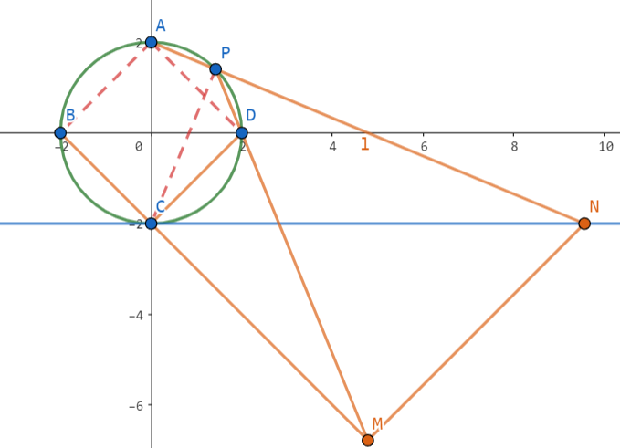
考虑将椭圆 \(\mathrm{E}\) 仿射变换为 \(\frac{x^2}{4}+\frac{y^2}{4}=1\)，则四边形 \(\mathrm{ABCD}\) 为正方形。
由 \(\mathrm{A,B,D,P}\) 四点共圆知 \(\angle \mathrm{NPM}=\angle \mathrm{ABD}=45^\circ\)。显然 \(\angle \mathrm{NCM}=45^\circ\)，因此 \(\mathrm{P,N,M,C}\) 四点共圆。
故 \(\angle \mathrm{NMC}=\angle \mathrm{APC}=90^\circ\)，而 \(\angle \mathrm{DCB}=90^\circ\)，故 \(\mathrm{MN}\parallel \mathrm{CD}\)。
仿射变换的常见性质
- 同素性：变换后，点仍是点，线仍是线
- 结合性：变换后，在直线上的点仍在直线上
- 斜率比不变, 面积比不变
- 平行关系不变, 共线线段比例关系不变, 点分线段比不变
同一法
朴素做法是设点 \(\mathrm{P}\ (x_0,y_0)\)，然后表示出点 \(\mathrm{N,M}\)，进而爆算论证 \(k_{NM}=\frac{2}{3}\)，但是计算量太大。
考虑同一法，我们去设点 \(\mathrm{N}\ (t,-2)\)，然后作 \(\mathrm{NM'}\parallel \mathrm{CD}\) 交直线 \(\mathrm{BC}\) 于 \(\mathrm{M'}\)，如果能说明 \(\mathrm{P,D,M'}\) 三点共线，则由同一法知成立（因为 \(\mathrm{BC}\) 与 \(\mathrm{PD}\) 交点唯一）。
直线 \(\mathrm{AN}:\ y=-\frac{4}{t}x+2\)，联立 \(\mathrm{E}\) 易得 \(\mathrm{P}\ (\frac{36t}{36+t^2},\frac{2t^2-72}{36+t^2})\)。
再联立 \(\begin{cases}\mathrm{BC}:\ y=-\frac{2}{3}x-2 \\ \mathrm{NM'}:\ y=\frac{2}{3}(x-t)-2\end{cases}\)，易得 \(\mathrm{M'}\ (\frac{t}{2},-\frac{t}{3}-2)\)。
最后由 \(\vec{\mathrm{PD}}=(\frac{108+3t^2-36t}{36+t^2},\frac{72-2t^2}{36+t^2})\)，\(\vec{\mathrm{DM'}}=(\frac{t}{2}-3,-\frac{t}{3})\) 知 \(\vec{\mathrm{PD}} \parallel \vec{\mathrm{DM'}}\)，故 \(\mathrm{P,D,M'}\) 三点共线，命题成立。
2022·新高考 II 卷，21（命题背景：渐近线引理，相似）
已知双曲线 \(\mathrm{C}:\ x^2-\frac{y^2}{3}=1\)，右焦点为 \(\mathrm{F}\ (2,0)\)。过 \(\mathrm{F}\) 的直线与 \(\mathrm{C}\) 的两条渐近线分别交于 \(\mathrm{A,B}\) 两点，点 \(\mathrm{P}\ (x_1,y_1),\ \mathrm{Q}\ (x_2,y_2)\) 在 \(\mathrm{C}\) 上，且 \(x_1>x_2>0,\ y_1>0\)。过 \(\mathrm{P}\) 且斜率为 \(-\sqrt{3}\) 的直线与过 \(\mathrm{Q}\) 且斜率为 \(\sqrt{3}\) 的直线交于点 \(\mathrm{M}\)，从下面 (1)(2)(3) 中选取两个作为条件，证明另外一个成立。
(1) \(\mathrm{M}\) 在 \(\mathrm{AB}\) 上；(2) \(\mathrm{PQ}\parallel \mathrm{AB}\)；(3) \(\mathrm{|MA|=|MB|}\)。
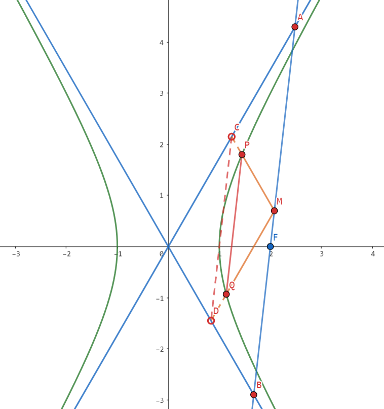
渐近线引理 + 相似
我们考虑一般化的双曲线 \(\frac{x^2}{a^2}-\frac{y^2}{b^2}=1\)。
由于渐近线方程为 \(\frac{x^2}{a^2}-\frac{y^2}{b^2}=0\)，它与双曲线方程仅差在常数项上（核心），因此两者间存在大量性质。
这里大体罗列部分性质（待完善）：
- \(\tau\) 上点 \(\mathrm{M}\) 分别作两平行线，围成的平行四边形面积为定值
- 过点 \(\mathrm{M}\) 作直线交 \(\tau\) 于点 \(\mathrm{A,B}\)，渐近线于点 \(\mathrm{C,D}\)，则 \(\mathrm{|AC|}=\mathrm{|BD|}\)
在本题要用到的性质是：\(\mathrm{PQ}\parallel \mathrm{CD}\)。
证明采用曲线系：设点 \(\mathrm{M}\ (x_0,y_0)\)，则双曲线 \(\mathrm{C}:\ \frac{x^2}{a^2}-\frac{y^2}{b^2}=1\)，渐近线 \(\mathrm{l_1}:\ \frac{x^2}{a^2}-\frac{y^2}{b^2}=0\)，过 \(\mathrm{M}\) 的两条线 \(\mathrm{l_2}:\ \frac{(x-x_0)^2}{a^2}-\frac{(y-y_0)^2}{b^2}=0\)。
直线 \(\mathrm{PQ}:\ \frac{2x_0x}{a^2}-\frac{x_0^2}{a^2}-\frac{2y_0y}{b^2}+\frac{y_0^2}{b^2}=1\)，直线 \(\mathrm{CD}:\ \frac{2x_0x}{a^2}-\frac{x_0^2}{a^2}-\frac{2y_0y}{b^2}+\frac{y_0^2}{b^2}=0\)，显然斜率相等。
(1)(2) ⇒ (3)：显然 \(\triangle \mathrm{OCD}\sim \mathrm{OAB}\)，设 \(\frac{|OD|}{|OB|}=\frac{|OC|}{|OA|}=\lambda\)，则 \(\frac{|AM|}{|AB|}=\frac{|BM|}{|AB|}=1-\lambda\)，因此 \(2(1-\lambda)=1\Rightarrow \lambda=\frac 12\)，故 \(\mathrm{|MA|=|MB|}\)。
(1)(3) ⇒ (2)：由 \(\triangle \mathrm{ACM}\sim \triangle \mathrm{AOB}\) 知 \(\mathrm{|OD|}=\frac{1}{2}\mathrm{|OB|}\)，同理 \(\mathrm{|OC|}=\frac{1}{2}\mathrm{|OA|}\)，因此 \(\mathrm{PQ}\parallel \mathrm{AB}\)。
(2)(3) ⇒ (1)：同一法易证（证 \(\mathrm{AB}\) 中点 \(\mathrm{M'}\) 符合条件，而平行线交点唯一），其他过程与前面类似。
2022·浙江卷，21（命题背景：对合变换）
已知椭圆 \(\tau: \frac{x^2}{12}+y^2=1\)，设 \(\mathrm{A,B}\) 是椭圆上异于 \(\mathrm{P}\ (0,1)\) 的两点，且点 \(\mathrm{Q}\ (0,\frac 12)\) 在线段 \(\mathrm{AB}\) 上，直线 \(\mathrm{PA,PB}\) 分别交直线 \(y=-\frac 12 x+3\) 于 \(\mathrm{C,D}\) 两点。
（2）求 \(|\mathrm{CD}|\) 的最小值。
齐次化 + 参数方程
注意到直线 \(\mathrm{AB}\) 过定点，由对合变换知直线 \(\mathrm{PA,PB}\) 斜率积为定值。证明采用齐次化：
设 \(\mathrm{AB}:\ mx+n(y-1)=1\)，代入 \(\mathrm{Q}\ (0,\frac{1}{2})\) 得 \(n=-2\)，联立 \(\tau\) 得 \(-3\left(\frac{y-1}{x}\right)^2+2m\left(\frac{y-1}{x}\right)+\frac{1}{12}=0\)，因此 \(k_{PA}\cdot k_{PB}=-\frac{1}{36}\)。
这之后要求的东西就跟椭圆无关了，问的是长度，因此宜用参数方程，设 \(\mathrm{CD}: \begin{cases}x=\frac{2}{\sqrt{5}}t \\ y=3-\frac{1}{\sqrt{5}} t\end{cases}\)
则 \(k_{PA}\cdot k_{PB}=\left(\frac{2\sqrt{5}-t_1}{2t_1}\right)\cdot \left(\frac{2\sqrt{5}-t_2}{2t_2}\right)\)，化简得 \(t_1t_2=\frac{9\sqrt{5}}{5}(t_1+t_2)-18\)，于是：
在 \(t_1+t_2=\frac{18\sqrt{5}}{5}\) 时取等。
2022·浙江，21（命题背景：极点极线）
已知椭圆 \(\frac{x^2}{8}+\frac{y^2}{4}=1\)，左右焦点分别为 \(\mathrm{F_1,F_2}\)，\(\mathrm{A,B}\) 是椭圆上两点，\(\mathrm{F_1}\) 是 \(\triangle \mathrm{ABF_2}\) 的重心。
（2）设 \(\mathrm{C,D}\) 是椭圆上两点，\(\mathrm{F_1}\) 在直线 \(\mathrm{CD}\) 上的投影为 \(\mathrm{P}\)，证明：\(|PC|\cdot |PD|\) 为定值。
极点极线
由 \(\mathrm{F_1}\) 关于椭圆的极线为 \(x=-2\) 知，\(\mathrm{P}\) 在 \(x=-2\) 上。
设 \(\mathrm{P}\ (-2,t)\)，则 \(\mathrm{CD}:\ y=\frac{1}{t}(x+2)+t\)，联立椭圆得 \((t^2+2)y^2-2t^3y-4t^2-8=0\)。
因此 \(|PC|\cdot |PD|=\sqrt{1+t^2}|y_C-y_D|=\sqrt{1+t^2}\cdot \frac{4\sqrt{2(t^2+1)(t^2+2)}}{t^2+2}=4\sqrt{2}\)。
2021·全国甲卷，20（命题背景：彭赛列闭合定理）
抛物线 \(\mathrm{C}:\ y^2=x\)，圆 \(\mathrm{M}:\ (x-2)^2+y^2=1\)。
（2）设 \(\mathrm{A_1,A_2,A_3}\) 是 \(\mathrm{C}\) 上的三个点，直线 \(\mathrm{A_1A_2,A_1A_3}\) 均与 \(\mathrm{M}\) 相切，判断 \(\mathrm{A_2A_3}\) 与 \(\mathrm{M}\) 的位置关系，并说明理由。
设点法
抛物线上有天然的优美"斜率"形式，我们好好利用它。设三个点的坐标为 \((x_i,y_i)\ (i=1,2,3)\)。
则直线 \(\mathrm{AB}:\ (y_1+y_2)y-x-y_1y_2=0\)，与 \(\mathrm{M}\) 的距离为 \(\frac{|2+y_1y_2|}{\sqrt{1+(y_1+y_2)^2}}=1\)。
同理解得 \(\begin{cases}(2+y_1y_2)^2=1+(y_1+y_2)^2 \\ (2+y_1y_3)^2=1+(y_1+y_3)^2\end{cases}\)，我们只需要证 \((2+y_2y_3)^2=1+(y_2+y_3)^2\)。
由同构知 \(y_2,y_3\) 为 \((y_1^2-1)t^2+2y_1 t+3-y_1^2=0\) 的两根，因此 \(\begin{cases}y_2+y_3=\frac{2y_1}{1-y_1^2} \\ y_2y_3=\frac{y_1^2-3}{1-y_1^2}\end{cases}\)。
回代易知 \(\begin{cases}(2+y_2y_3)^2= \left(\frac {1+y_1^2}{1-y_1^2}\right)^2\\ 1+(y_2+y_3)^2=\left(\frac {1+y_1^2}{1-y_1^2}\right)^2\end{cases}\)，因此 \(\mathrm{A_2A_3}\) 与 \(\mathrm{M}\) 相切。
2021·新高考 I 卷，21（命题背景：圆锥曲线上的四点共圆）
已知曲线 \(\tau: x^2-\frac{y^2}{16}=1\)。设点 \(\mathrm{T}\) 在直线 \(x=\frac 12\) 上，过 \(\mathrm{T}\) 的两条直线分别交 \(\mathrm{C}\) 于点 \(\mathrm{A,B}\) 两点和 \(\mathrm{P,Q}\) 两点，且 \(\mathrm{|TA|\cdot |TB|=|TP|\cdot |TQ|}\)，求 \(k_{AB}+k_{PQ}\)。
显然它等价于 \(\mathrm{A,B,P,Q}\) 四点共圆，结论是：圆锥曲线上四点共圆，则对边的倾斜角互补。
方法一：曲线系（有扣分风险）
设直线 \(\mathrm{AB}:\ y=k_1(x-\frac{1}{2})+m\)，直线 \(\mathrm{PQ}:\ y=k_2(x-\frac{1}{2})+m\)。于是过 \(\mathrm{A,B,P,Q}\) 四点的圆方程为：
由于圆方程的形式为 \(Ax^2+By^2+Dx+Ey+F=0\ (A=B)\)，故 \(xy\) 项前系数为 \(0\)，即 \(k_1+k_2=0\)。
备注 用曲线系，不仅可以判定四点是否共圆，还可以顺带求出圆方程。
方法二：参数方程
设 \(\mathrm{T}(\frac{1}{2},t)\)，直线 \(\mathrm{AB}\) 的参数方程为 \(\begin{cases} x=\frac{1}{2}+l\cos \alpha \\ y=t+l\sin \alpha\end{cases}\)，直线 \(\mathrm{PQ}\) 的参数方程为 \(\begin{cases} x=\frac{1}{2}+l\cos \beta \\ y=t+l\sin \beta\end{cases}\)。
联立 \(\mathrm{AB}\) 与 \(\tau\) 得
因此 \(\mathrm{|TA|\cdot |TB|}=|l_1l_2|=\frac{-t^2-12}{16\cos^2\alpha-\sin^2\alpha}\)，同理知 \(\mathrm{|TP|\cdot |TQ|}=|l_3l_4|=\frac{-t^2-12}{16\cos^2\beta-\sin^2\beta}\)。
由 \(\mathrm{|TA|\cdot |TB|=|TP|\cdot |TQ|}\) 知 \(\sin\alpha=\sin \beta\)，因此 \(\alpha+\beta=\pi\) 或 \(\alpha=\beta\)（舍）。
因此 \(k_1+k_2=0\)。
2021·浙江卷，21
已知 \(\mathrm{F}\ (1,0)\) 是抛物线 \(y^2=4x\) 的焦点，\(\mathrm{M}\ (-1,0)\) 在准线上。
（2）设过点 \(\mathrm{F}\) 的直线交抛物线于 \(\mathrm{A,B}\) 两点，斜率为 \(2\) 的直线 \(l\) 与直线 \(\mathrm{MA,MB,AB,x}\) 轴依次交于点 \(\mathrm{P,Q,R,N}\)，且 \(\mathrm{|RN|^2=|PN|\cdot |QN|}\)，求直线 \(l\) 在 \(x\) 轴上截距的范围。
广泛设线，巧妙韦达转化
我们一次性把每条直线都表示出来：\(\begin{cases}\mathrm{AB}:\ x=my+1 \\ \mathrm{l}:\ x=\frac{1}{2}y+t \\ \mathrm{MA,MB}:\ x=ny-1\end{cases}\)。
容易口算出 \(y_P=\frac{t+1}{n_1-\frac 12}\)，\(y_Q=\frac{t+1}{n_2-\frac 12}\)，\(y_R=\frac{t-1}{m-\frac 12}\)。
接下来一步很重要，就是注意到 \(\mathrm{A,B}\) 是在抛物线上的，通过联立直线 \(\mathrm{MA,AB}\)，我们可以解出 \(\mathrm{A}\ (\frac{n_1+m}{n_1-m},\frac{2}{n_1-m})\)，代入抛物线方程得 \(n^2-m^2-1=0\)，因此 \(\begin{cases}n_1+n_2=0\\ n_1\cdot n_2=-m^2-1\end{cases}\)。
回到题目，我们化简 \(\mathrm{|RN|^2=|PN|\cdot |QN|}\) \(\iff \left(\frac{t-1}{m-\frac 12}\right)^2=\frac{-(t+1)^2}{(n_1-\frac 12)(n_2-\frac 12)}=\frac{(t+1)^2}{m^2+\frac 34}\)。
我们惊喜的发现了什么？对，\(t\) 跟 \(m\) 可以分离开了！这样我们可以进行单变量转换（设 \(p=m-\frac 12\) 换元）：
接下来就是分类讨论。
\(\circ\) 若 \(\frac{t+1}{t-1}\ge \frac{\sqrt{3}}{2}\)，易得 \(t>1\) 或 \(t\le -4\sqrt{3}-7\)；
\(\circ\) 若 \(\frac{t+1}{t-1}\le -\frac{\sqrt{3}}{2}\)，易得 \(4\sqrt{3}-7\le t<1\)。
\(l\) 与 \(x\) 轴的截距即为 \(t\)，因此截距 \(t\in (-\infty,-4\sqrt{3}-7]\cup [4\sqrt{3}-7,1)\cup (1,+\infty)\)。
2020·浙江卷，21
已知椭圆 \(\mathrm{C_1}:\ \frac{x^2}{2}+y^2=1\)，抛物线 \(\mathrm{C_2}:\ y^2=2px\ (p>0)\)，点 \(\mathrm{A}\) 是椭圆 \(\mathrm{C_1}\) 与抛物线 \(\mathrm{C_2}\) 的交点，过点 \(\mathrm{A}\) 的直线 \(l\) 交椭圆 \(\mathrm{C_1}\) 于点 \(\mathrm{B}\)，交抛物线 \(\mathrm{C_2}\) 于点 \(\mathrm{M}\)。
（2）若存在不过原点的直线 \(l\)，使得 \(\mathrm{M}\) 为线段 \(\mathrm{AB}\) 的中点，求 \(p\) 的最大值。
方法一：设点法（精彩）
设点 \(\mathrm{A}\ (2pa^2,2pa),\mathrm{M}\ (2pb^2,2pb)\)，则 \(\mathrm{B}\ (4pb^2-2pa^2,4pb-2pa)\)。
将 \(\mathrm{A,M}\) 代入椭圆方程得 \(\begin{cases} \frac{(2pa^2)^2}{2}+(2pa)^2=1 \\ \frac{(4pb ^2-2pa^2)^2}{2}+(4pb-2pa)^2=1\end{cases}\)，下式减上式化简得 \(\begin{cases}p^2=\frac{1}{2(a^4+2a^2)} \\ b^2+ab+2=0\end{cases}\)。
只需要 \(\Delta=a^2-8\ge 0\Rightarrow a\ge 2\sqrt{2}\)，故 \(p^2\le \frac{1}{160}\Rightarrow p\le \frac{\sqrt{10}}{40}\)。
方法二：设点法 + 中点弦
在椭圆里，\(\mathrm{M}\) 为线段 \(\mathrm{AB}\) 的中点等价于 \(k_{OM}\cdot k_{AB}=-\frac{1}{2}\)，即 \(\frac{1}{b(a+b)}=-\frac{1}{2}\Rightarrow b^2+ab+2=0\)。
模拟卷好题记录⚓︎
2023.02 温州返校，8（新视角：变换参照系）
直线 \(l\) 与双曲线 \(\frac{x^2}{a^2}-\frac{y^2}{b^2}=1\ (a>0,b>0)\) 的左、右两支分别交于点 \(A,B\)，与双曲线的两条渐近线分别交于点 \(C,D\)（\(A,C,D,B\) 从左到右依次排列），若 \(OA\bot OB\)，且 \(|AC|,|CD|,|BD|\) 成等差数列，则双曲线的离心率的取值范围是（ ）
A. \([\frac{\sqrt{10}}{2},+\infty)\)
B. \([2\sqrt{2},\sqrt{10}]\)
C. \([\frac{\sqrt{10}}{2},2\sqrt{3}]\)
D. \([\sqrt{10},+\infty)\)
解答
\(\triangleright^{[1]}\) 在双曲线中有结论 \(|AC|=|BD|\)，因此 \(2|CD|=|AC|+|BD|=2|AC|\Rightarrow |AC|=|CD|=|BD|\)。
\(\triangleright^{[2]}\) 我们换个角度，固定 \(A,C,D,B\)，去求能容纳它的双曲线。
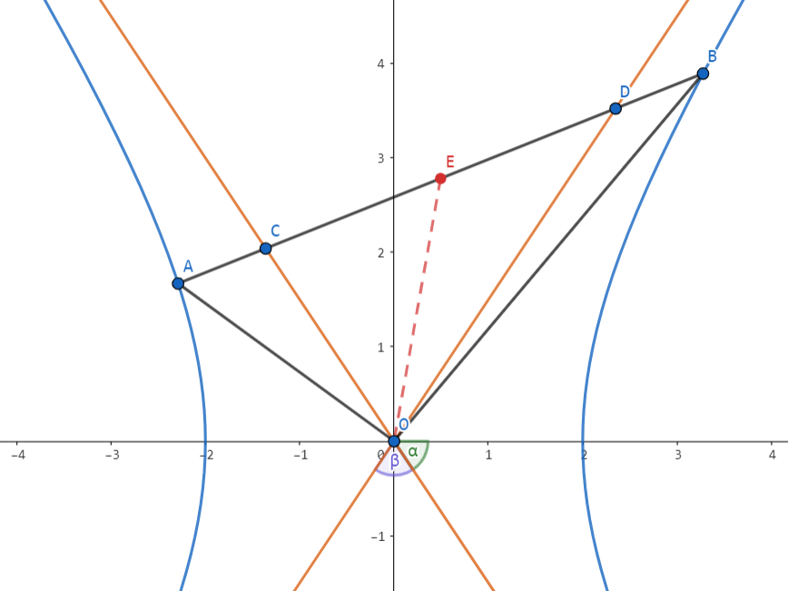
设 \(CD\) 中点为 \(E\)，渐近线与 \(x\) 轴的夹角为 \(\alpha\)，\(\angle COD=\beta\)（\(2\alpha+\beta=\pi\)），则 \(O\) 在以 \(AB\) 为直径的圆上。
我们剥离双曲线，单看 \(A,C,D,B\) 这个结构：
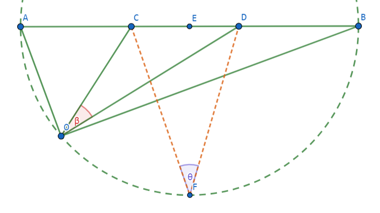
点 \(F\) 满足 \(EF\bot AB\)，由圆外角 \(<\) 圆周角知 \(\beta\le \theta< \frac{\pi}{2}\)，因此：
回到双曲线本身，\(\tan\alpha=\frac{b}{a}\ge 3\Rightarrow e\in [\sqrt{10},+\infty)\)，选 \(\boxed{\mathrm{D}}\)。
反思
\([1]\) 双曲线与其渐近线间有许多优美的性质，本质在于它们的方程为 \(\frac{x^2}{a^2}-\frac{y^2}{b^2}=0/1\)，只有常数项不同，故不影响 \(x_1+x_2\) 的值。下面这些结论定性记忆，考场代特殊位置还原具体数值即可。
设 \(P\) 在双曲线 \(C\) 上，则
- \(P\) 到两渐近线距离之积为定值 \(\frac{a^2b^2}{c^2}\)；
- 过 \(P\) 作两渐近线的平行线，与两渐近线围成的平行四边形面积为定值 \(\frac{ab}{2}\)；
- 过 \(P\) 作 \(C\) 的切线，则 \(P\) 为所截线段中点；
- 过 \(P\) 作 \(C\) 的切线，与渐近线围成的三角形面积为定值 \(ab\)。
\([2]\) 遇到圆锥曲线的题，我们似乎很容易局限于"以圆锥曲线为母体"的思维定势中，但这不是绝对的。像此题，固定这条直线，去求符合要求的双曲线的 \(\alpha\) 限制，会更加便捷。
2023.02 LHB，2（新视角：光学性质，圆）
已知 \(F_1,F_2\) 是椭圆 \(\frac{x^2}{9}+\frac{y^2}{5}=1\) 的左右焦点，若直线 \(l\) 是椭圆的一条切线，若点 \(F_1,F_2\) 到直线 \(l\) 的距离分别为 \(d_1,d_2\)，则有（ ）
A. \(d_1+d_2=9\)
B. \(d_1d_2=5\)
C. \(2\sqrt{5}\le d_1+d_2\le 6\)
D. \(\frac{1}{5}\le \frac{d_1}{d_2}\le 5\)
解答
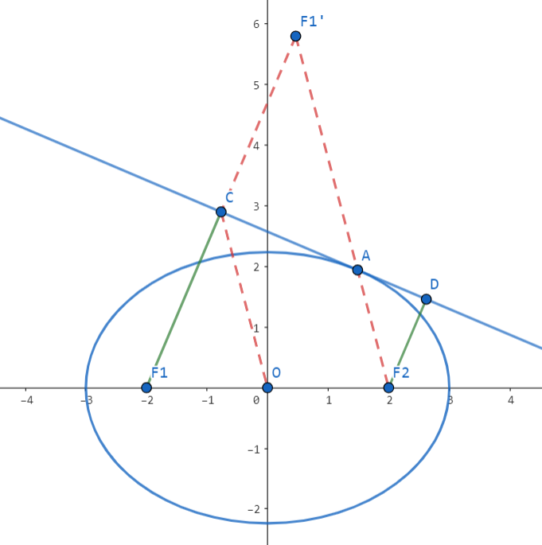
作 \(F_1\) 关于切线的对称点 \(F_1'\)，由椭圆的光学性质知 \(F_1',A,F_2\) 三点共线。
由椭圆的第一性质知 \(|F_1'F_2|=2a\)，由 \(|CO|\) 是 \(\triangle \mathrm{F_1F_1'F_2}\) 的中位线 \(\Rightarrow |CO|=a\)。因此 \(C,D\) 在以 \(O\) 为圆心，半径为 \(a\) 的圆上。
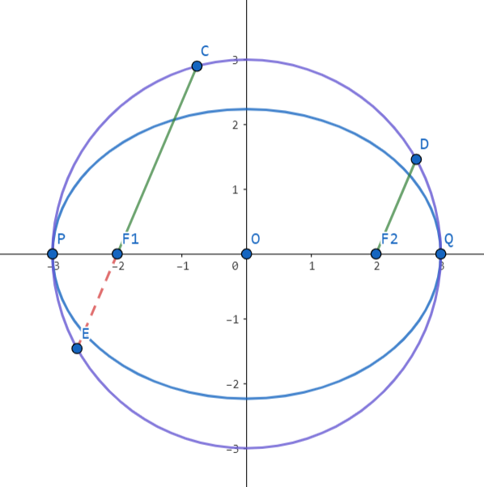
我们将不必要的线条抹去，延长 \(CF_1\) 至 \(E\)，由于 \(CF_1\parallel DF_2\)，由对称性知 \(|F_1E|=|DF_2|\)。
由相交弦定理知 \(d_1d_2=|F_1P||F_1Q|=(a-c)(a+c)=5\)，因此 \(B\) 正确。
又 \(|CF_1|\ge |CO|-|OF_1|=1\)，因此 \(d_1+d_2\in [2\sqrt{5},6]\)，\(\frac{d_1}{d_2}\in [\frac{1}{5},5]\)，因此 \(CD\) 正确。
综上，选 \(\boxed{\mathrm{BCD}}\)。
2023.02 G12 名校协作体，22（新视角：焦半径单刀直入）
已知椭圆 \(C:\frac{x^2}{4}+\frac{y^2}{3}=1\)，\(F_1,F_2\) 为椭圆 \(C\) 的左右焦点，\(Q(x_0,y_0)\) 为平面内一个动点，其中 \(y_0>0\)，记直线 \(QF_1\) 与椭圆 \(C\) 在 \(x\) 轴上方的交点为 \(A(x_1,y_1)\)，直线 \(QF_2\) 与椭圆 \(C\) 在 \(x\) 轴上方的交点为 \(B(x_2,y_2)\)。
若 \(|QF_1|+|QF_2|=3\)，探究 \(y_0,y_1,y_2\) 之间关系。
方法一：角度式焦半径 + 新椭圆
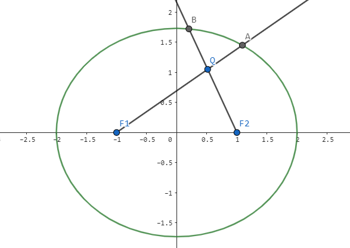
显然 \(\mathrm{Q}\) 在 \(\frac{x^2}{\frac{9}{4}}+\frac{y^2}{\frac{5}{4}}=1\) 上，两椭圆共焦点，用角度式焦半径。
设 \(\angle \mathrm{AF_1F_2}=\alpha,\angle \mathrm{BF_2F_1}=\theta\)，则 \(\begin{cases} |QF_1|= \frac{\frac 54}{\frac 32-\cos \alpha}\\ |AF_1|= \frac{3}{2-\cos \alpha}\\ |QF_2|= \frac{\frac 54}{\frac 32-\cos \theta}\\ |BF_2|= \frac{3}{2-\cos \theta}\\ \end{cases}\)。
由于 \(|QF_1|+|QF_2|=3\)，故
因此 \(\boxed{\frac{1}{y_1}+\frac{1}{y_2}=\frac{4}{3}\cdot \frac{1}{y_0}}\)。
方法二：焦半径
由焦半径知 \(\begin{cases}|F_1A|=2+\frac{x_1}{2} \\ |F_2B|=2-\frac{x_2}{2}\end{cases}\)，因此 \(\begin{cases}|F_1Q|=\frac{y_0}{y_1}(2+\frac{x_1}{2}) \\ |F_2Q|=\frac{y_0}{y_2}(2-\frac{x_2}{2})\end{cases}\)。
注意到
因此 \(\frac{y_0}{y_1}+\frac{y_0}{y_2}=\frac{4}{3}\Rightarrow \boxed{\frac{1}{y_1}+\frac{1}{y_2}=\frac{4}{3}\cdot \frac{1}{y_0}}\)。
反思
\([1]\) 一开始我只想到角度式焦半径的做法，可能是思路被"新椭圆"框死了。清醒时回头一想，发现直接焦半径就可以秒杀，非常精彩！
2023.02 浙南七彩，21（高观点：第二定义，相似）
已知点 \(\mathrm{F}\) 为双曲线 \(\tau:\frac{x^2}{4}-\frac{y^2}{12}=1\) 的右焦点，过 \(\mathrm{F}\) 的任一直线 \(l\) 交 \(\tau\) 于 \(\mathrm{A,B}\) 两点，直线 \(l_1:x=1\)。
（2）若 \(\mathrm{M}(-4,6)\) 为曲线 \(\tau\) 上一点，直线 \(\mathrm{MA,MB}\) 分别与直线 \(l_1\) 交于 \(\mathrm{D,E}\) 两点，问以线段 \(\mathrm{DE}\) 为直径的圆是否过定点？若是，求出定点坐标；若不是，请说明理由。
溯源：第二定义+相似
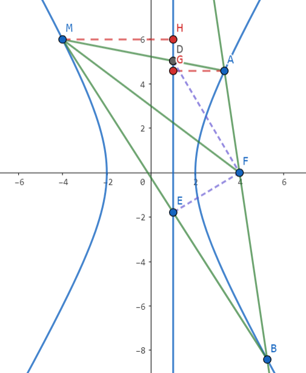
\(\triangleright^{[1]}\) 对于任意在 \(\tau\) 上的点 \(\mathrm{M}\)，均满足 \(FD\bot FE\)。
直线 \(l_1\) 是双曲线的右准线，由双曲线的第二定义，\(\mathrm{\frac{|MF|}{|MH|}=\frac{|AF|}{|AG|}=e\Rightarrow \frac{|FM|}{|FA|}=\frac{|MH|}{|AG|}}\)。
显然 \(\triangle \mathrm{DHM}\sim \triangle \mathrm{DGA}\)，因此 \(\mathrm{\frac{|MH|}{|AG|}=\frac{|DM|}{|DA|}}\)。
因此 \(\mathrm{\frac{|FM|}{|FA|}=\frac{|DM|}{|DA|}\Rightarrow FD}\) 平分 \(\mathrm{\angle MFA}\Rightarrow \angle \mathrm{DFE}=\frac{\pi}{2}\)。由对称性知 \((-2,0),(4,0)\) 均为所求定点。
反思
\([1]\)：考场上如果不知道这个结论会很被动。首先得猜到定点在 \(x\) 轴上，然后代 \(l\) 垂直 \(x\) 轴的特殊情形把定点猜出来，然后再针对性证明应该是最好的策略。
2023.04 长沙一中月考，22（高观点：阿氏圆）
设椭圆 \(\mathrm{C}: \frac{x^2}{8}+\frac{y^2}{6}=1\)，焦点为 \(\mathrm{F_1,F_2}\)，过 \(\mathrm{F_2}\) 作斜率为 \(k\ (k>0)\) 的直线 \(m\) 与椭圆 \(\mathrm{C}\) 相交于 \(\mathrm{A,B}\) 两点（点 \(\mathrm{A}\) 在 \(x\) 轴上方）。点 \(\mathrm{M,N}\) 是椭圆上异于 \(\mathrm{A,B}\) 的两点，\(\mathrm{MF_2,NF_2}\) 分别平分 \(\angle \mathrm{AMB},\angle \mathrm{ANB}\)，若 \(\triangle\mathrm{MF_2N}\) 外接圆的面积为 \(\frac{81}{8}\pi\)，求直线 \(m\) 的方程。
解答
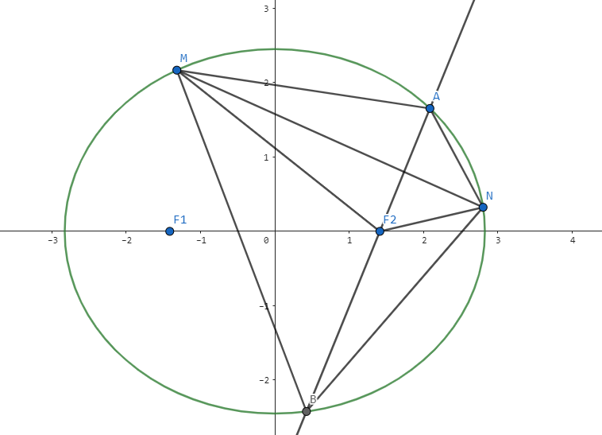
由 \(\mathrm{MF_2,NF_2}\) 是角平分线知 \(\mathrm{\frac{|MA|}{|MB|}=\frac{|NA|}{|NB|}=\frac{|AF_2|}{|F_2B|}}\)，因此 \(\mathrm{M,F_2,N}\) 均在以 \(\mathrm{A,B}\) 为定点，两边比为 \(\mathrm{\frac{|AF_2|}{|F_2B|}}\) 的阿氏圆上。
由 \(\triangle \mathrm{MF_2N}\) 外接圆面积为 \(\frac{81}{8}\pi\) 知 \(R=\frac{9}{2\sqrt{2}}\)，则 \(\mathrm{\frac{|F_2A|}{|F_2B|}=\frac{2R-|F_2A|}{2R+|F_2B|}}\)，解得 \(\frac{1}{|F_2A|}-\frac{1}{|F_2B|}=\frac{1}{R}=\frac{2\sqrt{2}}{9}\)。
设 \(\angle \mathrm{AF_2C}=\theta\)，则 \(|F_2A|=\frac{b^2}{a+c\cos \theta},|F_2B|=\frac{b^2}{a-c\cos \theta}\)，因此 \(\frac{2c\cos \theta}{b^2}=\frac{2\sqrt{2}}{9}\)，即 \(\cos \theta =\frac{2}{3}\)。
因此直线 \(m\) 的方程为 \(y=\frac{\sqrt{5}}{2}x-\frac{\sqrt{10}}{2}\)。
2023.11 绍兴一模，22（高观点：极点极线，调和点列，阿氏圆）
已知双曲线 \(\Gamma: x^2-y^2=1\)，过点 \(\mathrm{M}(1,-1)\) 的直线 \(l\) 与该双曲线的左、右两支分别交于点 \(\mathrm{A,B}\)。求定点 \(\mathrm{P}(t,t-2)\ (t\neq 1)\)，使得 \(\angle \mathrm{MPA}=\angle \mathrm{MPB}\)。
溯源：极点极线+调和点列+阿氏圆
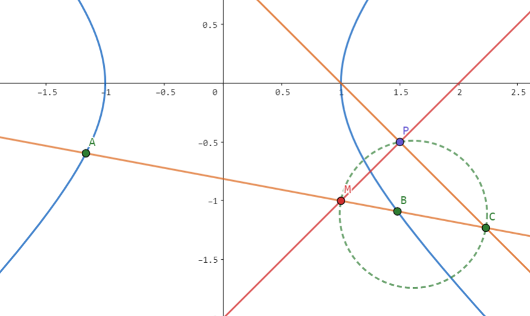
\(\angle \mathrm{MPA}=\angle \mathrm{MPB}\) 即 \(\mathrm{PM}\) 为 \(\angle \mathrm{APB}\) 的角平分线，由角平分线定理知 \(\mathrm{\frac{|PA|}{|PB|}=\frac{|AM|}{|MB|}}\)。
结构酷似调和点列，作 \(\mathrm{M}\) 关于 \(\Gamma\) 的极线 \(l_1: x+y=1\)，交直线 \(l\) 于 \(\mathrm{C}\)，则 \(\mathrm{(A,B;M,C)}\) 为调和点列。
于是 \(\mathrm{\frac{|AM|}{|MB|}}=\mathrm{\frac{|AC|}{|CB|}}\)，因此 \(\mathrm{P}\) 在以 \(\mathrm{MC}\) 为直径的阿氏圆上，故 \(\angle \mathrm{MPC}=\frac{\pi}{2}\)。
又 \(\mathrm{P}(t,t-2)\) 在 \(l_2: y=x-2\) 上，且 \(l_1\) 过 \(\mathrm{C}\)，\(l_2\) 过 \(\mathrm{M}\)，\(l_1\bot l_2\)，因此 \(\mathrm{P}\) 为 \(l_1\) 与 \(l_2\) 的交点，即 \(\mathrm{P}(\frac{3}{2},-\frac{1}{2})\)。
量产 只需要构造 \(l_2\) 过 \(\mathrm{M}\) 且垂直于 \(\mathrm{M}\) 的极线 \(l_1\) 即可，\(l_1\) 与 \(l_2\) 的交点即为定点 \(\mathrm{P}\)。
解答 1：向量法（重思维，计算量小）
注意到 \(\angle \mathrm{APB}<\pi\)，因此 \(\angle \mathrm{MPA}=\angle \mathrm{MPB}\) 等价于 \(\cos \angle \mathrm{MPA}=\cos \angle \mathrm{MPB}\)，于是有：
联立韦达，解得 \(t=\frac{3}{2}\)，于是 \(\mathrm{P}(\frac{3}{2},-\frac{1}{2})\)。
解答 2：到角公式
设 \(\mathrm{AP}\) 的斜率为 \(k_1\)，\(\mathrm{BP}\) 的斜率为 \(k_2\)，注意到 \(\mathrm{MP}\) 的斜率为 \(1\)，则 \(\begin{cases}\tan\angle \mathrm{MPA}=\frac{1-k_1}{1+k_1} \\ \tan \angle\mathrm{MPB}=\frac{k_2-1}{1+k_2}\end{cases}\)，因此 \(k_1k_2=1\)。
因此 \(\frac{t-2-y_A}{t-x_A}\cdot \frac{t-2-y_B}{t-x_B}=1\)，联立韦达，解得 \(t=2\)。
2024.03 T8，18（命题背景：曲线系，极点极线）
已知双曲线 \(\tau: \frac{x^2}{4}-y^2=1\)，\(\mathrm{B}\ (-a, 0), \mathrm{C}\ (a,0)\)，其中 \(a>2\)，\(\mathrm{D}\ (x_0,y_0)\ (x_0\ge a,y_0>0)\) 是双曲线上一点，直线 \(\mathrm{DB}\) 与双曲线 \(\tau\) 的另一个交点为 \(\mathrm{E}\)，直线 \(\mathrm{DC}\) 与双曲线 \(\tau\) 的另一个交点为 \(\mathrm{F}\)，双曲线 \(\tau\) 在 \(\mathrm{E,F}\) 处的两条切线记为 \(l_1,l_2\)，\(l_1\) 与 \(l_2\) 交于点 \(\mathrm{P}\)，线段 \(\mathrm{DP}\) 的中点为 \(\mathrm{G}\)。
(2) 求 \(\mathrm{\frac{|GB|}{|GC|}}\) 的值。
曲线系 + 极点极线
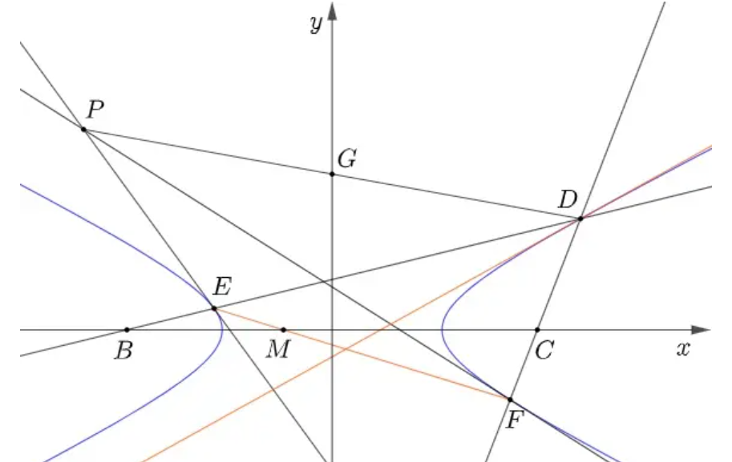
\(\textbf{Lemma.}\) 对于二次曲线 \(ax^2+by^2=1\) 上的四边形 \(\mathrm{A_1A_2A_3A_4}\)，记 \(A_iA_{i+1}\) 所在直线方程为 \(y=k_ix+m_i\)，则有 \((k_1+k_3)(m_2+m_4)=(k_2+k_4)(m_1+m_3)\)。
\(\textbf{Proof.}\) 考虑曲线系 \((y-k_1x-m_1)(y-k_3x-m_3)+\lambda (y-k_2x-m_2)(y-k_4x-m_4)=ax^2+by^2-1\)，对比 \([xy], [y]\) 项前系数即可。
考虑四边形 \(\mathrm{DDFE}\)，\(\mathrm{DE}\) 与 \(\mathrm{DF}\) 在 \(x\) 轴上的截距为相反数，故 \(\mathrm{DD}\) 与 \(\mathrm{EF}\) 在 \(x\) 轴上的截距也为相反数。
又 \(\mathrm{DD}:\ \frac{x_0x}{4}-y_0y=1\) 过 \((\frac{4}{x_0},0)\)，故 \(\mathrm{EF}\) 过 \((-\frac{4}{x_0},0)\)。
而 \(\mathrm{EF}\) 为 \(\mathrm{P}\) 的极线，由配极原理知 \(\mathrm{P}\) 在 \(\mathrm{M}\) 的极线上，故 \(x_P=-x_0\)。
优化解答：齐次化
设 \(\mathrm{EF}: m(x-x_0)+n(y-y_0)=1\)，注意到 \(\frac{1}{k_{DE}}+\frac{1}{k_{DF}}=\frac{2x_0}{y_0}\)，联立得
由韦达得 \(m(-\frac{4}{x_0}-x_0)-ny_0=1\)，因此 \(\mathrm{EF}\) 过 \((-\frac{4}{x_0},0)\)。
设 \(\mathrm{P}(x_1,y_1)\)，则 \(\mathrm{EF}:\ \frac{x_1x}{4}-y_1y=1\)，故 \(x_1=-x_0\)，因此 \(\mathrm{\frac{|GB|}{|GC|}=1}\)。